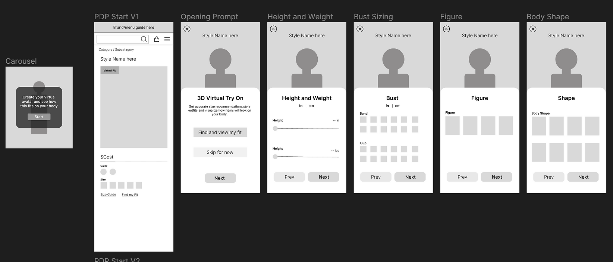
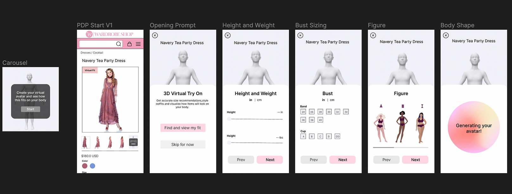

Case Overview
My Role
Co-lead UX researcher and lead UX designerBackground
Size and fit are significant barriers for users purchasing clothing online. Sizing notations across brands are often inconsistent and incongruent, lowering customer confidence in their appropriate size. Without accurate and accessible information on size and fit, users are disincentivized from purchasing and abandoning the item. To address this issue, URBN (parent company of Urban Outfitters, Anthropology, and Free People) wanted to explore new fit tool options. This study focuses on exploring Style.me, a virtual fitting room tool that allows users to enter measurements and generate a 3D display of selected items on their customized body type. The goal of this research is to understand what Style.me does well for customers regarding fit and how customers interact with novel fit tools and to conceptualize an optimized version for URBN's platforms.
Key Project Structure
- Customer segment identification
- Customer discovery
- Create a minimum viable product and low-fi wireframes
- Conduct user testing with low-fi prototype
- Create high fidelity prototype
Key Research Questions
- Does use of the Style.me avatar try-on feature give users more information than what already exists on a PDP regarding size & fit? v
- Specifically, how well does this tool solve the user’s need to determine what size to buy, and how that size will lay on their body (fit)?
- What are the current buying habits of households in the New England Region?
- Are there any usability issues or points of friction experienced while using this tool, specifically with building an avatar, “trying on” different sizes, etc.
Methodology & Tools
- Qualitative interviews
- Competitor analysis
- Usability Test
- Miro
- Figma
Key Project Outcome
Evaluative Testing
The usability test for Style.me utilized Wardrobe Shop, a online retailer with existing Style.me integration, and was divided into 3 general sections. First, users were instructed to walk through how they would find their size and then rate their confidence levels and describe any fit concerns. Second, if users had not already done so, they were asked to click into the Style.me tool and complete the primary flow, and again to describe their confidence in fit as well as any points of friction they experienced. Lastly, users were prompted to engage with the secondary flow and again describe their experience. Data was then collected from both verbal and behavioral observations.
Research Testing Matrix
{kind=link}
{kind=link}
{kind=link}
Analysis and Findings
Technical Concerns & Usability
- A portion of users was prevented from using the tool at all due to technical issues; these users were excluded from feedback about the usability of the tool. Overall 42% experienced serious lag and 18% were not able to complete tasks. This is a major concern to discuss with the vendor as we can almost guarantee users won’t wait for the tool in a non-testing environment.
- Style.me had low discoverability. Users' initial impressions showed CTAs were hard to notice and deprioritized compared to the size guide and TrueFit CTAs (42% vs 100% call-out rate).
- Usability Test
- Users found the prompts intuitive and had no issues will filling out their measurements, however, 38% of plus size users hit a weight limit with the sliders despite the shop offering larger sizes that would fit per the size guide/TrueFit.
- 55% of users were unable to find the secondary flow which would allow users to see different sizes on the avatar even after being prompted to do so.
Size and Fit
- 52% of participants expressed that the Style.me tool improved their confidence in their initial size choice. It is important to note that the use of this tool did not change the mind of users, but rather validated their size selection. The overall value add for size is low relative to the level of effort required to use the tool.
- Regardless of whether they felt confident in the size, most users had specific concerns of the fit of the item. This was especially true for plus-sized users, who because of lacking plus imagery, found it difficult to imagine what a dress would look like on their body type.
- 68% of users found the primary flow to answer their fit questions, and 100% of users found the secondary flow to be helpful with more specific fit information. However, users often still finished with questions about fit due to customization (i.e arm tightness, feel, stretch).
Size and Fit Tool Comparison

Style.me Redesign Brainstorm
User testing of Style.me identified several ways in which a virtual fitting tool could be used by customers to increase confidence in their size choices and their understanding of fit; however, there were several significant issues that prevented users from effectively engaging with this tool to improve experiences with online size and fit. As part of my intern project at URBN, I utlized my research to them re-design the Style.me interface to better suit the size and fit needs of their customers.
Overall Pain Points

Current Style.Me Design Analysis

- Inconsistent messaging by CTAs
- CTAs seperated from the size guide
- No clear navigation schema
Competitor Design Analysis Takeaways
- Forces you through the flow before accessing the model
- Personalize size selection persists
- Upfront navigation between sizes
- Upfront navigation between styles
- High visibility CTA
Wireframes
{kind=link}
In this redesign, there are two gateways into the virtual fitting room designed to help with the issue of low discoverability. The primary one's CTA is right next to the size guide and uses the terminology "find my fit" to help users better identify what they are engaging with (as opposed to previous CTAs "3-d Try on"). The secondary CTA is located at the end of the image carousel and more clearly identifies the option to customize your avatar and see the item on you.

To address users' inability to find their recommended size, they will not only get a pop-up that they must click elsewhere to dismiss but also have a persistent designation of it (via asterisk). To allow users to better access fit information, I pulled in the "fit details" (bust, waist, hips) from the original secondary flow into the primary flow. In addition, users will be able to navigate between sizes without having to click into another screen.
High-Fidelity
{kind=link}
{kind=link}
Next Steps
While this case study identified and explored the potential benefits of virtual fit tools for
e-commerce, more research into the higher-level integration of tools such as Style.me from a PLP and
site navigation perspective will be crucial to understanding their true value-added (or lack thereof).
Additionally, larger-scale user research of parallel tools like TrueFit, which have already been widely
implemented in the retail market would give important insight into the actual use and conversion rates
of additional fit information. Overall, however, virtual fitting tools could potentially be a valuable
improvement to the e-commerce user experience.